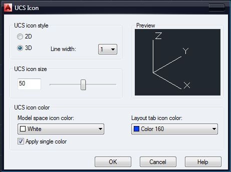
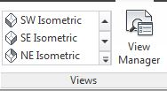

Лекция 10: 3D моделирование в AutoCAD. Основные понятия
Данный урок открывает раздел посвященный изучению основ 3D моделирования в системе AutoCAD и рассказывает о основных знаниях, необходимых для работы с 3D объектами, ориентированием в пространстве, а так же о использовании систем координат для построения объектов.
Трехмерные координаты
Мировая система координат WCS — World Coordinate System, значок которой находится в левом нижнем углу окна чертежа, имеет три оси. Ось Х направлена ??слева направо, ось Y — снизу вверх и ось Z имеет направление в сторону пользователя перпендикулярно плоскости XY, что совпадает с плоскостью экрана. При моделировании двумерных объектов в плоскости XY, точка определялась значением двух координат X и Y, координату Z, равную нулю можно было игнорировать. В трехмерном пространстве точка определяется тремя координатами X, Y, Z.
Методы введения трехмерных координат
Как и на плоскости, точку можно определить с помощью значений абсолютных или относительных координат.
Абсолютные координаты определяют положение точки относительно начала координат — точки с координатами 0,0,0. Запись относительных координат начинается символом @ и определяет положение точки относительно последней введенной (@x,y,z).
В трехмерном пространстве можно задавать прямоугольные Декартовы координаты точки в виде x, y, z. Аналогом полярных координат на плоскости, в трехмерном пространстве является цилиндрические и сферические координаты точки.
Цилиндрические координаты точки определяют расстояние от начала координат вдоль направления, заданного углом относительно оси Х, и значением Z вдоль перпендикуляра к плоскости XY(@ расстояние < угол, z или расстояние < угол, z).
Сферические координаты точки (@ расстояние < угол 1 < угол 2 или расстояние < угол 1 < угол 2) определяют ее положение расстоянием от начала координат вдоль направления, заданного углом относительно оси Х и углом относительно плоскости XY. Ввести координаты можно с клавиатуры в командной строке или использовать интерактивный способ, нажав левую кнопку «мыши » в определенной точке. При вводе координат интерактивным методом необходимо включить режим объектной привязки к характерным точкам объектов и режим объектного отслеживания.
Фильтры точек Координаты точки можно указать с помощью фильтра. Фильтром определяются значения координат Х и (или) Y, и (или) Z точки, показанной курсором. Далее система предложит ввести координаты не определенные фильтром. Используются следующие фильтры:. X,. Y,. Z,. XY,. XZ,. YZ. Например, чтобы указать точку, значения координат X, Y которой совпадают со значением координат X, Y определенной точки чертежи придерживаются диалога:
Command: _line Specify first point:. xy Установка фильтра для определения значений координат X и Y
of Указать курсором точку.
(need Z): 50 Указание значение координаты Z
Знак системы координат В левом нижнем углу экрана находится знак системы координат, который показывает направление осей координат, ориентацию плоскости XY и отмечает начало координат. AutoCad позволяет управлять видом знака, изменять его стиль. Выбрать форму знака можно в диалоговом окне UCS Icon, которое вызывается из выпадающего меню Viev ? Display ? UCS Icon ? или опцией Properties команды UCSICON В окне выбирается стиль (2D или 3D) отображение знака. Поле UCS icon size устанавливает величину знака в процентном отношении размера экрана (доступны значения от 5 до 95). И в поле UCS icon color из списка можно выбирать цвет отображение знака.
Системы координат
AutoCad позволяет строить объекты в любой плоскости трехмерного пространства. Для упрощения построения объектов в плоскости, не параллельной плоскости построения XY, необходимо задать систему координат так, чтобы совместить плоскость построения XY с данной плоскостью, т.е. осуществить переход от мировой системы координат в систему координат пользователя. Осуществляется переход командой UCS (User coordinate system). Начало системы координат пользователя, как правило, переносят в угол или в центр объекта, который на данной плоскости строится. Ориентация осей X, Y и Z определяется по правилу правой руки. Если средний, указательный и большой пальцы сориентировать взаимно перпендикулярно, то большой палец указывает направление оси Х, указательный — оси Y, а средний — оси Z. Поворот в положительном направлении системы координат вокруг любой из осей выполняется против часовой стрелки. Поворачивая руку, можно предусмотреть как будут направлены оси. Команда UCS (Система координат пользователя)Способы ввода команды:
Набрать с клавиатуры команду UCS.
Вызов меню: Tools ? New UCS
Команда предназначена для создания, сохранения, восстановления или уничтожения системы координат пользователя и имеет ряд опций, которые выводятся в командном строке после ввода команды: Command: ucs Current ucs name: * WORLD * Enter an option [New / Move / orthoGraphic / Prev / Restore / Save / Del / Apply /? / World]
New (Новая) — переход к созданию системы координат пользователя.
Move (Переместить) — позволяет задать точку, в которую переместится начало координат. Соответствующая кнопка.
orthoGraphic (Ортогональная) — выбор одной из шести стандартных ортогональных систем координат. Каждую из этих систем можно выбрать нажав кнопку со списком, содержащим перечень стандартных систем.
Prev (Предыдущая) — возврат к предыдущей системы координат пользователя.
Restore (Восстановить) — восстановление системы координат пользователя с ее именем.
Save (Сохранить) — сохранение текущей системы под заданным именем, не превышает 256 символов.
Apply (Применить) — применить систему координат пользователя текущего видового экрана в всех или выбранных видовых экранов.
? — Вывод списка именованных систем координат пользователя и их характеристик.
World (Мир) — возвращение в мировую систему координат.
Чтобы построить новую систему координат пользователя, выбирается опция New команды UCS, которая в свою очередь предоставляет доступ к ряду опций, предназначенных для создания систем координат.
ZAxis (ZОсь) — новая система координат определяется точкой, задает начало координат и направление оси Z. В зависимости от наклона оси Z одна из осей X или Y остается параллельной плоскости XY.
3point (3 точки) — система задается тремя точками, первая из которых начало координат, вторая указывает положительное направление оси Х, третья положительный направление оси Y. Данный способ наиболее распространен для создания системы координат.
OBject (Объектная система координат) — система координат выравнивается по плоскости двумерного объекта.
Face (Грань) — выравнивание системы координат по плоскости грани трехмерного объекта.
View (Вид) — установка системы координат параллельной плоскости экрана.
X / Y / Z (Поворот вокруг осей X, Y, Z) — система координат возвращается вокруг указанной оси в соответствии с правилом правой руки. Выполняя построения объектов в системе координат пользователя, координаты точек указываются относительно текущей системы. Если необходимо указать координаты точки в мировой системе координат, в то время как она не является текущей, перед значением координат ставится символ звездочки: * 77,49.
Плоскость экрана, которая совпадает с плоскостью XY мировой системы координат, называется плоскостью построений. Строя двумерные объекты, можно изменять их уровень, то есть управлять перемещением плоскости построений вдоль оси Z.
Наблюдать за изменением уровня плоскости можно при переходе к изометрических видов. Осуществляется переход через пункт меню View ? 3D Views, далее выбирается один из изометрических видов, например SW изометрия (юго — западная изомер -рия). Графический экран изменяется. Значок мировой системы координат переместится в центр экрана, и на ней будет отражена ось Z, отрезки, образуют перекресток, направляются параллельно осям X и Y. Двумерные графические примитивы отображаются в изометрических проекциях.
Нарисуем четырехугольник первый угол которого находится в начале координат, противоположный угол в точке с координатами (200, 100):
Command : _rectang Specify first corner point or [ Chamfer / Elevation / Fillet / Thickness / Width ] : 0,0
Specify other corner point or [ Dimensions ] 200,100
Вызовем контекстное меню данного объекта и выберем команду Properties. Изменить уровень плоскости построения можно введением положительного или отрицательного числа в поле Elevation. Введя значение 100, получим смещение объекта вверх вдоль оси Z, отрицательное значение в поле приведет к смещению объекта вниз вдоль оси Z.
Один из способов создания трехмерных объектов — выдавливание. Выдавливанием называется изменение такого свойства двумерного объекта, как толщина или высота. Выполнить операцию можно, выбрав из контекстного меню объекта команду Свойства и изменив значение в поле Thickness (Высота). Вводить можно как положительное, так и отрицательное значение. В первом случае объекты выдавливаются вдоль положительного направления оси Z, во втором случае вдоль отрицательного направления.
На криволинейной части объектов система выводит некоторое количество образующих. Выдавливание полилинии, прямоугольника, создает объекты с непрозрачными боковыми стенками, в то же время цилиндр, образованный выдавливанием круга, имеет также и непрозрачные основы.
К трехмерных объектов принадлежит также трехмерная полилиния.Трехмерная полилиния — трехмерный объект, состоящий из связанных прямолинейных сегментов, вершины которых имеют какие-либо координаты трехмерного пространства. Трехмерная полилиния не принадлежит единой плоскости, и для ее сегментов не задается тип линий. Для черчения трехмерной полилинии предназначена специальная команда 3DPOLY, не поддерживает следующие функции команды строительства двумерной полилинии, как строительство дуг, изменение толщины линий. Трехмерная полилиния (3DPOLY)Способы ввода команды:
Набрать с клавиатуры команду 3DPOLY
Вызов меню: Draw ? 3D Polyline
После ввода команды выдаются запросы на ввод значений координат точек: Command : _3dpoly Specify start point of polyline : 20,100,50 Specify endpoint of line or [ Undo ] : 110,45,79 Specify endpoint of line or [ Undo ] : После создания двух и более прямолинейных сегментов полилинии запрос меняется: Specify endpoint of line or [ Close / Undo ] : Опции команды:Close (Замкнуть) — последняя точка полилинии соединяется с первой. Undo (Отменить) — уничтожается последний сегмент и ожидается ввод координат следующей точки. Для редактирования трехмерных полилиний, как и для редактирования двумерных полилиний, используют команду PEDIT. Команда PEDIT (Редактирование полилиний)Способы ввода команды:
Набрать с клавиатуры команду PEDIT (PE).
Вызов меню : MODIFY ? OBJECT ? POLYLINE
Кнопка на панели Modify. edit pline button
Командой можно редактировать одну или сразу несколько полилиний. После ввода команды система предложит выбрать полилинию: Select polyline or [ Multiple ]. Если же выбрать параметр Multiple, то можно редактировать несколько полиллиний. Далее предлагается выбрать опцию: Enter an option [ Close / Edit vertex / Spline curve / Decurve / Undo ] : Опции команды имеют следующее содержание:
Close — Замыкание открытой полилинии. Добавляется сегмент, соединяет начальную и конечную точки.
Edit vertex — Доступ к списку параметров, которые используются для редактирования вершин полилинии.
Spline curve — Преобразует полилинию в сплайн.
Decurve — Отменяет сглаживания. Возвращает полиллинию к предыдущему — него состояния.
Undo — Отменяет действие последней операции команды Pedit.
На этом знакомство вводный урок в раздел 3D моделирования окончен, а уже в следующем уроке мы начнем знакомить вас с 3D примитивами и способами их построения.
Создание новой пользовательской системы координат
Уровень и высота
Трехмерные полилинии